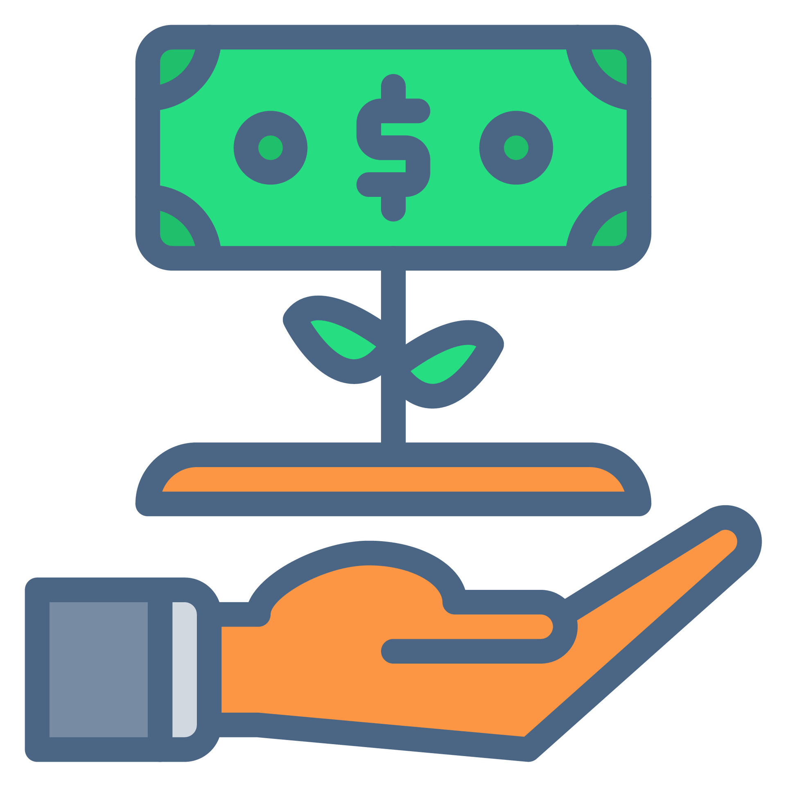

O que é o Mercado de Capitais?
Provavelmente você já ouviu falar sobre ações, bolsa de valores e investimentos. Mas talvez não saiba que o mercado de capitais vai muito além disso e tem um papel fundamental na economia? Pois acompanhe este artigo para entender melhor esse universo.
.Os primeiros passos
O conceito de mercado de capitais começou a ganhar forma há séculos, quando comerciantes e governos precisavam captar recursos para financiar seus projetos. Os primeiros registros datam do século XVII, com a criação da Bolsa de Amsterdã, considerada a primeira bolsa de valores do mundo.
Nesse período, surgiram os primeiros investidores que compravam e vendiam partes de empresas, dando início ao que conhecemos hoje como negociação de ações.
O mercado evolui
Com o tempo, o mercado de capitais se expandiu, surgindo novas formas de investimento, como títulos públicos, fundos imobiliários e derivativos. O avanço da tecnologia permitiu que investidores do mundo todo tivessem acesso a esse mercado de forma rápida e segura.

A principal função do mercado de capitais é conectar empresas que precisam de recursos com investidores que desejam rentabilizar seu dinheiro. Assim, ele se torna um dos pilares do crescimento econômico.
Hoje, qualquer pessoa pode investir na bolsa, seja comprando ações de grandes empresas ou diversificando por meio de fundos. O importante é entender os riscos e ter uma boa estratégia antes de começar.
Então é isso! Espero que você tenha gostado do nosso artigo com essa curiosidade sobre o mercado de capitais e suas possibilidades.